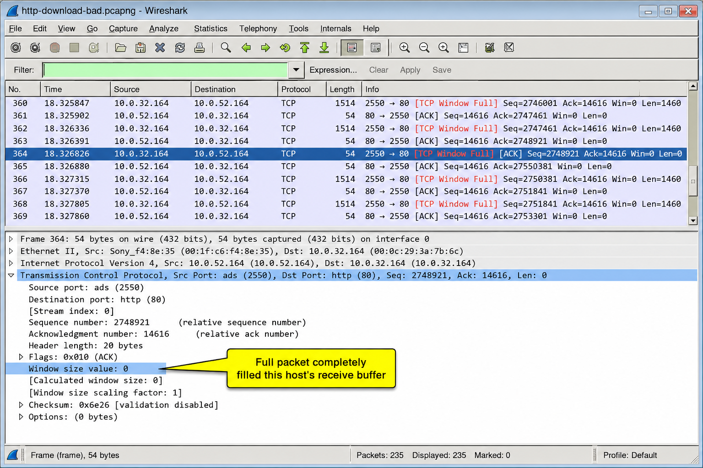
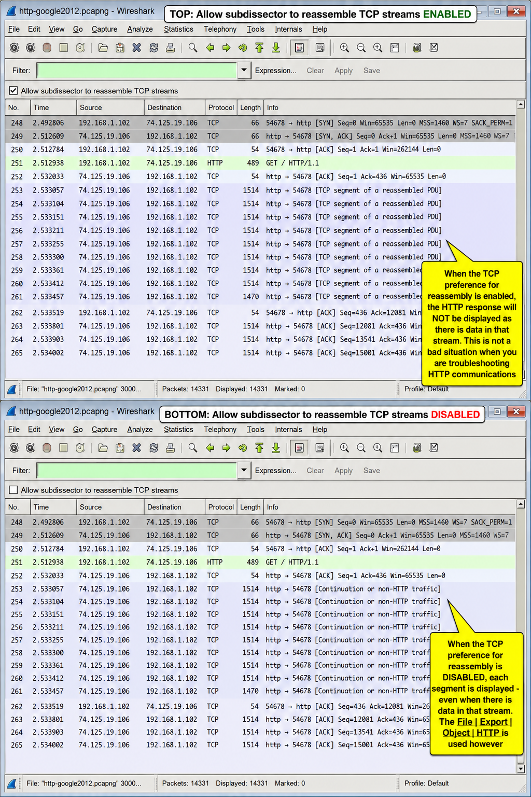
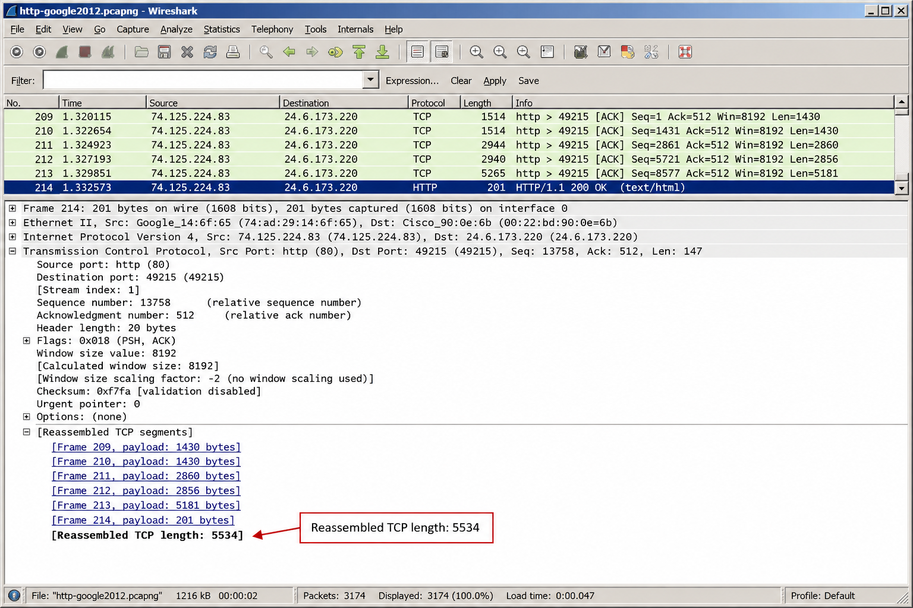
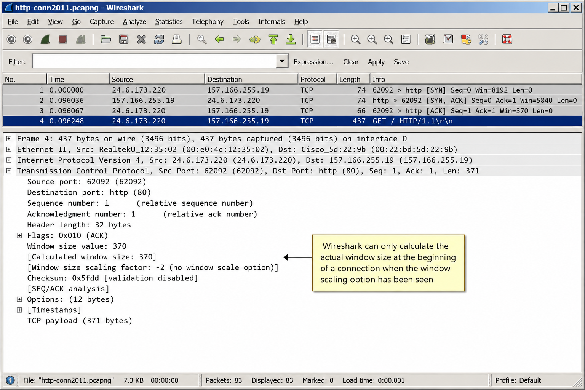
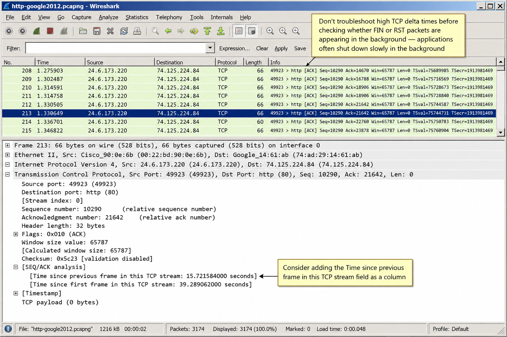
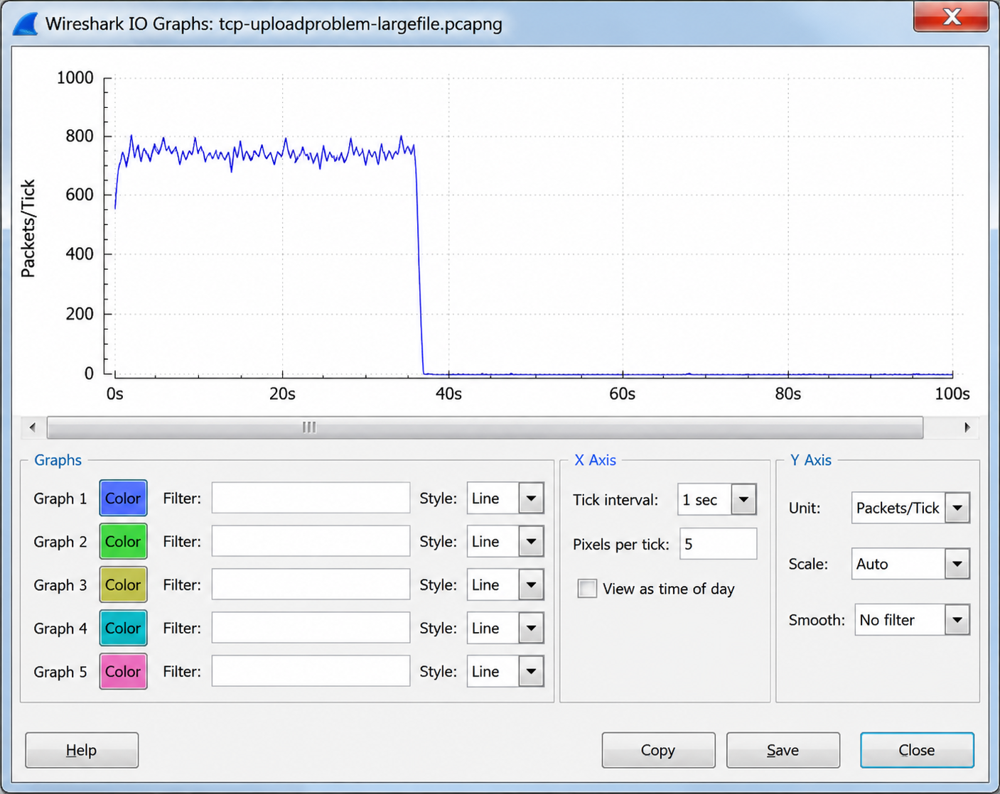
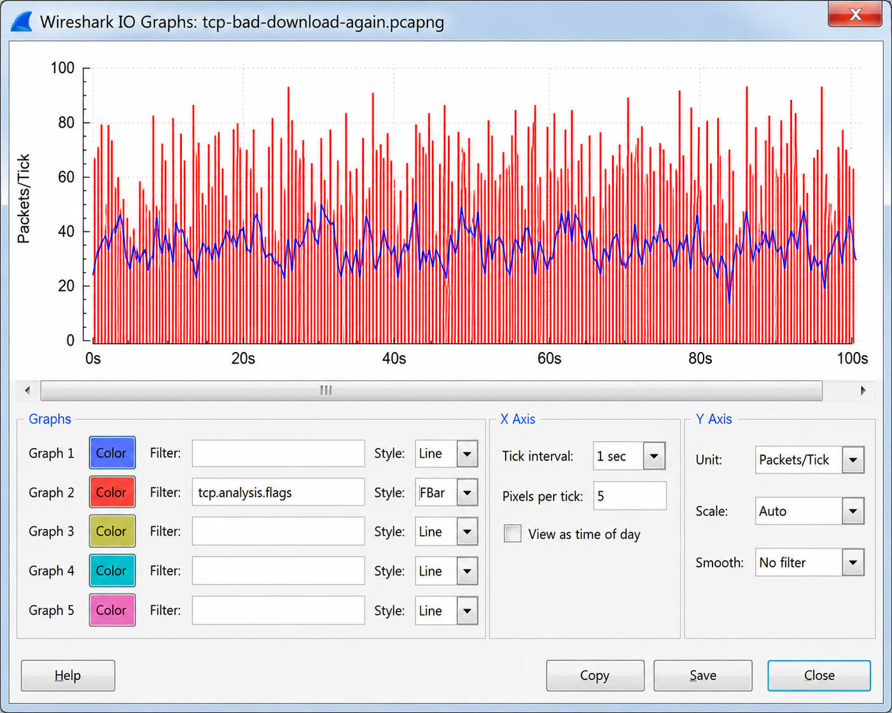
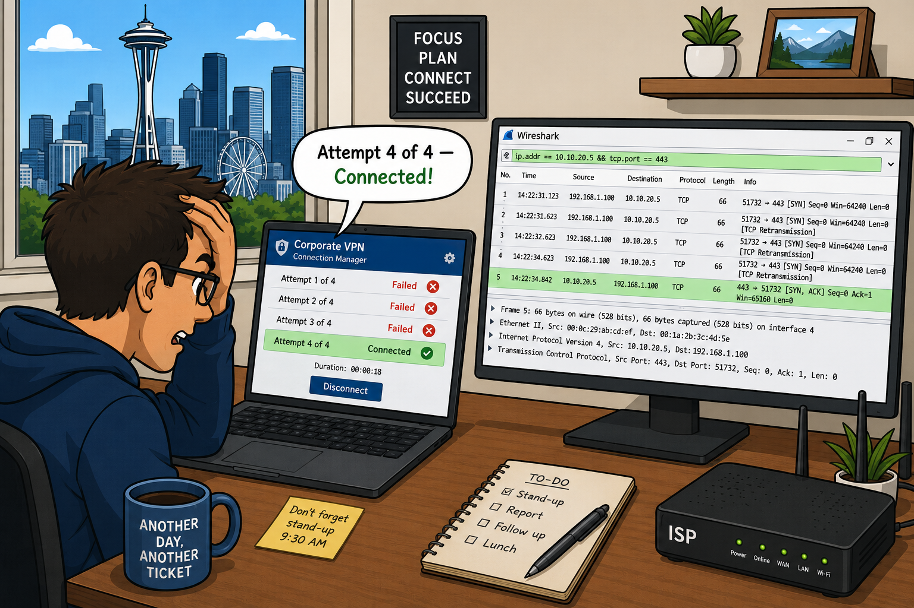

UDP and TCP are both transport protocols — but TCP adds significant complexity. What specific guarantees does TCP provide that justify this overhead? In what scenarios would you actually choose UDP over TCP despite its lack of reliability guarantees?
The Purpose of TCP
TCP (Transmission Control Protocol) provides a connection-oriented, reliable transport over an unreliable IP network. TCP is defined in RFC 793, with many subsequent enhancements. TCP is the transport protocol for HTTP, HTTPS, FTP, SMTP, and most other applications where data integrity matters.

TCP supports windowing — sending multiple packets in sequence without waiting for an individual acknowledgment for each. The size of the window is based on the network's ability to handle traffic (congestion), the receiver's available buffer space, and the sender's transmit buffer capability.
Use TCP when: data must arrive completely and in order (file downloads, web pages, database queries). Use UDP when: speed matters more than completeness (DNS queries, VoIP, online gaming, video streaming), or when the application implements its own reliability (TFTP, QUIC).
TCP provides reliability despite IP's best-effort delivery — but it can't fix congested or broken paths. If packets are consistently lost, TCP's retransmissions will eventually succeed, but application performance will suffer greatly. Wireshark lets you see exactly where and how often this happens.
TCP connections go through a well-defined lifecycle: establishment, data transfer, termination. The three-way handshake establishes sequence numbers for both sides. Why are Initial Sequence Numbers (ISNs) random rather than always starting at 0? What does a TCP Reset mean vs a TCP FIN?
Analyze Normal TCP Communications
Normal TCP communications follow a predictable lifecycle: connection establishment, data transfer, and connection termination. Understanding these patterns lets you quickly identify abnormal behavior.
The Establishment of TCP Connections — The Three-Way Handshake
TCP connections are established through a three-way handshake requiring three packets:
- SYN — Client sends SYN with its Initial Sequence Number (ISN). Flags: SYN=1, ACK=0
- SYN/ACK — Server responds with SYN/ACK: acknowledges client's ISN+1 and sends its own ISN. Flags: SYN=1, ACK=1
- ACK — Client acknowledges server's ISN+1. Flags: SYN=0, ACK=1. Connection established.
![Figure 229: The TCP three-way handshake: SYN, SYN/ACK, ACK establishes sequence numbers for both sides [http-google2011.pcapng]](../all-chapter-figures/fig229-dup-acks.png)
RFC 793 Section 3.4 states that data CAN be carried in the third packet of the handshake (the ACK). Some TCP/IP stacks include a GET request in the third packet. This is perfectly legitimate — Wireshark will flag it as unusual but it's allowed by the spec. You may see this with modern browsers optimizing connection setup.
When TCP-Based Services are Refused
If the target server does not have a process listening on the requested port:
- Server responds to the SYN with a RST/ACK — port closed, connection refused
- If the target is firewalled: the firewall may send ICMP Type 3, Code 3 (Port Unreachable), or simply silently drop the SYN
- If no response is received, the client's TCP stack retransmits the SYN multiple times before giving up
ICMP Destination Unreachable codes to watch for in TCP connection failures:
- Code 1: Host Unreachable
- Code 2: Protocol Unreachable
- Code 3: Port Unreachable
- Code 9: Communication with Network Administratively Prohibited
- Code 10: Communication with Host Administratively Prohibited
- Code 11: Destination Unreachable for Type of Service
The Termination of TCP Connections
TCP connections can be terminated in two ways:
- Implicit termination (FIN) — graceful close. A host sends FIN to indicate it has no more data to send. The FIN initiates a four-step closing: FIN, ACK, FIN, ACK. RFC 793 notes the FIN doesn't mean the sender won't receive more data — only that it's done sending.
- Explicit termination (RST) — abrupt close. Immediately terminates the connection with no graceful handshake. Used for error conditions, security events, or closing zombie connections.

RFC 793 defines the FIN bit as indicating there would be no more data from the sender. This does NOT prevent the receiver of the FIN from sending additional data — the connection is half-closed. The full close requires both sides to send FIN. Use netstat -a to see connections in FIN-WAIT and CLOSE-WAIT states.
TCP sequence numbers are at the heart of reliable delivery. Given the equation: Sequence Number + Bytes of Data Received = Acknowledgment Number Out — what happens to the sequence number during the handshake when no data bytes are sent? How does Wireshark's Relative Sequence Numbering feature help analysts?
How TCP Tracks Packets Sequentially
The sequencing/acknowledgment process is the core of TCP's reliability. Every byte of data has a sequence number, and the receiver acknowledges receipt.
The fundamental equation:

During the handshake and teardown, SYN and FIN each consume 1 sequence number (even though no data bytes are carried). This allows both sides to specifically ACK these control packets.
Wireshark's Relative Sequence Numbering
By default, Wireshark uses Relative Sequence Numbering — it displays 0 as the starting sequence number for each side of the connection, regardless of the actual ISN. This makes trace files much easier to read. The actual ISN might be 402,691,989 — Wireshark shows 0.
To see actual sequence numbers: Preferences → Protocols → TCP → uncheck Relative Sequence Numbers.

TCP uses cumulative acknowledgment — a single ACK acknowledges all data up to that sequence number. This means multiple data segments can be acknowledged by a single ACK, greatly reducing overhead. Most TCP stacks use Delayed ACKs: rather than ACKing every segment, wait up to 200ms and send a single ACK covering multiple segments.
TCP has two mechanisms for detecting and recovering from packet loss: Duplicate ACKs (receiver-driven) and RTO timeout (sender-driven). Which is faster? Under what network conditions would you see primarily Duplicate ACK-triggered retransmissions vs RTO-triggered retransmissions? What does that tell you about the network?
How TCP Recovers from Packet Loss
TCP has two complementary mechanisms for detecting and recovering from packet loss: receiver-driven Fast Recovery (via Duplicate ACKs) and sender-driven RTO timeout.
Packet Loss Detected by the Receiver — Fast Recovery
When a receiver gets an out-of-order segment (meaning a sequence number was skipped), it adjusts its Acknowledgment Number to request the missing sequence number. The receiver continues sending ACKs for this missing sequence number as more data arrives — these are Duplicate ACKs.
The receipt of three identical ACKs triggers a retransmission from the sender without waiting for RTO — this is called Fast Recovery (RFC 2001, updated in RFC 2581, RFC 2582).
On high-latency paths (satellite links, long-distance WAN), more than 3 Duplicate ACKs are common. Because many packets are in flight when loss occurs, the receiver sends many Duplicate ACKs before the sender receives them and retransmits. In Figure 229, the web browser sends 10 identical ACKs before the server responds with a retransmission.
Packet Loss Detected by the Sender — RTO Timeout
TCP senders maintain a Retransmission Timeout (RTO) value. If a data packet is not acknowledged before the RTO timer expires, the sender retransmits using the original sequence number.
When RTO triggers a retransmission, TCP's backoff algorithm doubles the RTO for each subsequent retransmission attempt. This exponential backoff continues until the packet is acknowledged or the sender gives up (typically after 5 retransmissions).
When taking a capture near the sender and you see retransmissions, you can't determine whether the data packets are failing to reach the target OR whether the ACKs are failing to return to the sender. Move Wireshark further along the path toward the receiver to determine which side of the loss is occurring.
Duplicate ACK retransmissions: Connection is alive, subsequent packets arrived, loss was in the middle. Usually indicates occasional packet loss or network congestion. RTO retransmissions: Connection appears stalled, subsequent packets also didn't arrive. More severe — indicates the path itself may be broken or heavily congested. Both appear in Wireshark Expert as 'Retransmission' or 'Fast Retransmission'.
Without SACK, if 1 packet in a sequence of 10 is lost, the sender might retransmit all 10 (stop-and-wait behavior). With SACK, what exactly does the receiver tell the sender, and how does this reduce unnecessary retransmissions? Where is SACK capability negotiated?
Improve Packet Loss Recovery with Selective Acknowledgments
Selective Acknowledgments (SACKs) are defined in RFC 2018 and significantly improve TCP's efficiency in handling packet loss by allowing the receiver to acknowledge non-contiguous blocks of data.
How SACK Works
Without SACK: when packet loss occurs, the receiver only tells the sender "I'm waiting for sequence number X." The sender doesn't know which subsequent packets arrived. It may retransmit packets that were already successfully received.
With SACK: the Duplicate ACKs include Left Edge and Right Edge values in the SACK option that identify exactly which byte ranges the receiver has already received. The sender only retransmits what is truly missing.
Establishing SACK Support
SACK capability must be established by BOTH hosts during the TCP handshake:
- The client includes the SACK Permitted option (Option 4) in the SYN packet
- The server includes SACK Permitted in the SYN/ACK
- If either side omits SACK Permitted, SACK is not used for that connection
In Figure 232, 10.0.52.164 is requesting sequence number 112750 while acknowledging receipt of bytes 114210 through 120050. Each Duplicate ACK has a different SACK Right Edge as more out-of-order data arrives. Once sequence 112750 is received, the SACK information becomes unnecessary and is removed from subsequent ACKs.
Filter for SACK Permitted option in handshake: tcp.options.sack_perm == 1
Filter for active SACK data: tcp.options.sack
SACK left and right edge: tcp.options.sack_le and tcp.options.sack_re
The TCP Window field advertises how much buffer space the receiver has available. When the window size drops to zero, what happens? Why would a receiver advertise a Window of zero even when the network path is perfectly healthy? Think about what's happening at the application layer in this case.
Understand TCP Flow Control
TCP flow control prevents a fast sender from overwhelming a slow receiver. The receiver advertises the amount of buffer space it has available via the Window Size field in every ACK.
The congestion window (cwnd) is the sender's internal limit on how many bytes can be outstanding (unacknowledged) at once. The actual transmission rate is the minimum of:
- The receiver's advertised window (rwnd)
- The sender's congestion window (cwnd)
- The sender's transmit buffer capability
The TCP Sliding Window
The TCP sliding window is the mechanism that allows multiple packets to be in flight simultaneously without waiting for individual acknowledgments:
- The window "slides" to the right as ACKs are received
- New segments can be sent as the window slides forward
- The window size grows during Slow Start (doubles each RTT until packet loss occurs) and then stabilizes during Congestion Avoidance

TCP Zero Window Condition
When the receiver's buffer fills up completely, it advertises a Window Size of 0. At this point:
- The sender stops transmitting data — no data can be sent when window=0
- The sender sends periodic Window Probe packets (containing 1 byte of data) to check if the window has reopened
- When the receiver's buffer drains (application reads data), it sends a Window Update ACK advertising a non-zero window
- Data transfer resumes
A TCP Zero Window condition means the receiver's application is not consuming data fast enough — the receive buffer is full. This is an application/host performance problem, not a network problem. Common causes: CPU-bound process, disk I/O bottleneck, application thread blocked, or insufficient host memory. The network is delivering data perfectly — the host just can't process it fast enough.
Window Scaling
The Window Size field is only 2 bytes, limiting the maximum window to 65,535 bytes. On high-bandwidth, high-latency links (like fiber internet), this limits throughput (bandwidth-delay product). Window Scaling (Option 3) multiplies the window size by a scale factor, allowing windows up to ~1 GB.
Window scaling must be negotiated in the handshake. If Wireshark doesn't see the handshake, it marks the scaling factor as -1 (unknown) and shows incorrect calculated window sizes.
Send Buffers and Application Limitation Issues
Application performance can be limited by send buffer settings, not just receive buffers:
- iPerf (popular throughput testing tool) has a default send buffer of 128KB — this may limit measured throughput
- FreeBSD and macOS have a
net.inet.tcp.sendspacesetting that may limit throughput - If a host's send buffer is too small, the sender may run out of data to send before receiving ACKs, leaving the network underutilized
If the receiver advertises a window smaller than one MSS (Maximum Segment Size), the sender may wait for the window to grow to at least one MSS (or half the receive buffer) before sending. This can stall data transfer even when window_size > 0. Create a filter: tcp.window_size < 1400 && tcp.window_size > 0 and set it close to your MSS value.
The Nagle algorithm and Delayed ACKs both aim to reduce overhead — but they can interact badly. Nagle buffers small sends until an ACK arrives. Delayed ACKs wait up to 200ms before sending an ACK. What happens when a telnet session (character-at-a-time) runs with Nagle enabled? What about when Nagle interacts with Delayed ACKs on a file transfer?
Understand Nagling and Delayed ACKs
The Nagle Algorithm
The Nagle algorithm (RFC 896) reduces the "small packet problem" — where applications like telnet send individual characters, each generating a tiny TCP segment with 40 bytes of header overhead for 1 byte of data.
Nagle rule: if there is unacknowledged data, buffer new outgoing data until either (a) there is a full MSS of data to send, or (b) the previous transmission is acknowledged.
Nagle is enabled by default. It's disabled by many applications using the TCP_NODELAY socket option (interactive apps: telnet, SSH, gaming, real-time analytics).
TCP Delayed ACKs
Rather than sending a separate ACK for every TCP segment received, TCP implementations using Delayed ACKs will send a single ACK when either:
- (a) No ACK was sent for the previous segment received (ACK every other segment), OR
- (b) A segment is received but no other segment arrives within 200 milliseconds
This reduces the number of ACK packets on the network. TCP Delayed ACKs are defined in RFC 1122, Section 4.2.3.2.
When Nagle and Delayed ACKs interact on interactive applications: Nagle holds a small write waiting for the previous ACK. Delayed ACKs holds the ACK for up to 200ms. The combined effect is a minimum 200ms delay for every write — completely unacceptable for interactive protocols. Disable Nagle (TCP_NODELAY) for all interactive, time-sensitive applications.
In the TCP Time-Sequence Graph, Delayed ACK problems appear as a stair-step pattern: the I-bar lines (representing TCP segments) have flat horizontal gaps of ~200ms between the end of one and the start of the next. The sending host is waiting for ACKs that are being deliberately delayed.
Wireshark's Expert Information automatically flags many TCP problems. When you see a 'Previous Segment Lost' flag (not a Retransmission, but the loss flag), what does that actually mean? How is it different from 'Retransmission'? Why might you see 'Spurious Retransmission'?
Analyze TCP Problems
TCP problems range from handshake failures to window zero conditions. Wireshark's Expert Information (Analyze → Expert Information) automatically flags many of these conditions.
TCP Handshake Problems
A TCP connection refusal is immediately visible: the server responds to SYN with RST/ACK. The connection cannot proceed and no data exchange occurs.
If you see many SYN packets being retransmitted without receiving SYN/ACK or RST/ACK, the target port is being silently dropped (likely by a firewall). This is distinct from a port-closed RST/ACK. An excessive number of failed TCP connection attempts (especially scanning sequential ports) indicates a TCP port scan — refer to Chapter 31 for scan detection.
Analyzing a Failed Handshake
Figure 236 in the book shows a failed handshake due to packet loss. Key observations:
- Handshake appears normal initially — SYN, SYN/ACK, ACK in packets 3-5
- The SYN sequence number of 0 is a relative number (actual ISN used was different)
- After the handshake, the client sends data and sets the PSH and ACK bits in packet 6
- Packet 7 is the first indication of a problem: the client's RTO has expired waiting for an ACK
- Packet 8 shows the server has NOT received the third handshake packet — it resends SYN/ACK requesting the ACK
- The server and client are now in a deadlock: the client sent data, the server is waiting for the handshake to complete
Any time you see a SYN/ACK after the three-way handshake has already completed, there is a problem. The connection would be considered invalid — either the third handshake packet (ACK) was lost, or there's a session state inconsistency. The connection must be torn down and recreated.
TCP Window Zero
When the receiver advertises Window Size = 0, the sender halts transmission. The sender sends periodic Window Probe packets (1 byte) to check if the window has opened. The Zero Window condition is caused by the receiving application not consuming data from the buffer fast enough — it's a host/application performance problem.
Key TCP Expert Information flags to know:tcp.analysis.retransmission — retransmitted segmenttcp.analysis.fast_retransmission — Fast Recovery retransmission (3 dup ACKs)tcp.analysis.duplicate_ack — duplicate acknowledgmenttcp.analysis.lost_segment — gap in sequence numbers detectedtcp.analysis.zero_window — window size is zerotcp.analysis.window_update — window size increased (window opened)tcp.analysis.keep_alive — TCP keep-alive probetcp.analysis.out_of_order — out-of-order segment
The TCP header has a Flags field with 9 bits. The SYN, ACK, FIN, RST, PSH bits are commonly discussed — but what is the URG bit? When would you see the PSH bit set? And what does it mean for analysis if you see 4 NOP bytes in a row in the TCP Options area?
Dissect the TCP Packet Structure
The TCP header is typically 20 bytes but can extend to 60 bytes when the Options field is used. The Data Offset field indicates the total header length.
TCP Header Fields
Source Port Field
The TCP source port is the listening port open at the sender. The assigned port list is at www.iana.org. Client ports (ephemeral) are typically above 1024 (often 49152-65535 on modern systems). Display filter: tcp.srcport==80
Destination Port Field
The target port open at the receiver. Well-known ports: 80=HTTP, 443=HTTPS, 21=FTP, 22=SSH, 25=SMTP, 53=DNS (over TCP), 3389=RDP. Display filter: tcp.dstport==80
Stream Index [Wireshark Field]
Not a real TCP header field — Wireshark assigns a Stream Index value to each TCP conversation. As of Wireshark 1.8, Stream Index starts at 0 and increments by 1 for each new TCP conversation. Useful for filtering a single conversation: tcp.stream==3 shows only the 4th TCP conversation in the trace.
Sequence Number Field
Uniquely identifies each TCP segment's position in the data stream. The Sequence Number increments by the number of data bytes in the segment. Each device selects a random Initial Sequence Number (ISN). Wireshark shows relative sequence numbers (starting at 0) by default.
Next Expected Sequence Number [Wireshark Field]
Wireshark-calculated field: Sequence Number + data bytes = the next expected sequence number from this host. Appears only on packets containing data, not on pure ACK packets.
Acknowledgment Number Field
Indicates the next expected sequence number from the OTHER host. When this value doesn't increment, that host is not receiving any new data (no data sent by the other side).
Data Offset Field
Defines the TCP header length in 32-bit words. Value of 5 = 20-byte header (no options). Values above 5 indicate TCP Options are present. The Data Offset tells you where the TCP data payload begins.
Flags Field
9 flag bits in the TCP header:
- Reserved — three bits always set to zero
- Nonce (NS) — works with ECN for congestion notification (RFC 3540)
- CWR (Congestion Window Reduced) — set to inform receiver that congestion window was reduced (ECN)
- URG (Urgent) — Urgent Pointer field is valid; rarely used today. Display filter:
tcp.flags.urg==1 - ACK (Acknowledgment) — Acknowledgment Number field is valid. Set on all packets after the initial SYN. Display filter:
tcp.flags.ack==1 - PSH (Push) — pass data directly to application, bypass buffering. Display filter:
tcp.flags.push==1 - RST (Reset) — close the connection immediately. Display filter:
tcp.flags.reset==1 - SYN (Synchronize) — set in the first two packets of the handshake. Display filter:
tcp.flags.syn==1 - FIN (Finish) — no more data from sender. Display filter:
tcp.flags.fin==1
Rather than combining individual flag filters, use the TCP flags summary value for efficiency. Example: tcp.flags==0x12 matches all SYN/ACK packets (SYN=1, ACK=1, others=0). tcp.flags==0x002 = pure SYN. tcp.flags==0x011 = FIN/ACK. tcp.flags==0x014 = RST/ACK.
Window Field
Advertises the receiver's available buffer space in bytes. The maximum value is 65,535 (2-byte field). With Window Scaling enabled, the actual window = Window field × scaling factor (can reach ~1 GB).
Checksum Field
Covers the TCP header and data (plus a pseudo-header from the IP header: source IP, destination IP, protocol number, TCP length). Verify valid checksums with tcp.checksum_bad==1.
Urgent Pointer Field
Only valid when the URG bit is set. Points to the last byte of urgent data in the segment. Wireshark won't display this field unless the URG bit is set.
TCP Options Area
Common TCP options:
- Option 0 (End of Option List) — marks end of options; optional
- Option 1 (NOP) — padding to align options to 4-byte boundary; 4 NOPs in a row = a device removed an option
- Option 2 (MSS, Length 4) — Maximum Segment Size; negotiated in handshake; both sides use the lower MSS value
- Option 3 (WSOPT, Length 3) — Window Scale factor; requires both sides to support it; must be in the SYN/SYN-ACK
- Option 4 (SACK Permitted, Length 2) — both sides must negotiate SACK in the handshake
- Option 5 (SACK) — carries Left Edge/Right Edge values during active SACK
- Option 8 (TSOPT, Length 10) — TCP Timestamp; enables PAWS (Protection Against Wrapped Sequence numbers) and better RTT calculation
Network devices (routers, NAT boxes, load balancers) sometimes alter TCP options as packets pass through. If you capture on both sides of a device and see different MSS values, Window Scale factors, or SACK Permitted settings, a device is tampering with TCP options. Watch for 4 NOPs in a row — this indicates a device removed an option and padded with NOPs. Wireshark Expert will warn about this.

Filter on TCP Traffic & TCP Protocol Preferences
Filter on TCP Traffic
The capture filter for TCP traffic is simply tcp. The display filter is also tcp.
tcp.dstport==80 — HTTP traffic
tcp.hdr_len > 20 — TCP headers with options
!(tcp.flags.cwr==0) || !(tcp.flags.ecn==0) — ECN-flagged packets
tcp.options.mss_val < 1460 — MSS below Ethernet standard
tcp.options.wscale_val — Window Scale option present
tcp.analysis.flags — any Expert TCP flag
tcp.analysis.lost_segment — lost segment detected
Set TCP Protocol Preferences
Access TCP preferences via Edit → Preferences → Protocols → TCP.
Validate the TCP Checksum if Possible
If capturing on the local host with checksum offloading enabled, disable this to suppress false checksum errors. The NIC computes checksums after Wireshark captures the packet, so Wireshark sees "wrong" checksums on locally-captured outbound packets.
Allow Subdissector to Reassemble TCP Streams
Wireshark can reassemble TCP streams across multiple segments. When enabled:
- The HTTP response code is visible even when spread across multiple segments
- The Packet Details pane shows "Reassembled TCP Segments" at the bottom
- Each segment includes links to the other segments in the stream
- When DISABLED: the HTTP response code is always displayed (better for troubleshooting HTTP)

Analyze TCP Sequence Numbers
Enabled by default. Provides efficient analysis by tracking sequence and acknowledgment numbers. Disabling also disables all Expert Info TCP conditions. Identifies: Lost Segments, Window is Full, Out-of-Order Segments, Frozen Window, Duplicate ACKs, Window Updates, Retransmissions, Fast Retransmissions.
Relative Sequence Numbers
Enabled by default. Displays 0 as the starting sequence number for each TCP conversation. Disable to see actual ISN values — useful when correlating captures from multiple network locations.
Window Scaling is Calculated Automatically
When Wireshark sees the TCP handshake, it evaluates the Window Scale option and calculates the actual advertised window size. If Wireshark misses the handshake, it marks the scaling factor as -1 (unknown) or -2 (handshake seen but no Window Scaling in use).
Track Number of Bytes in Flight
Enables tracking of unacknowledged bytes in flight. This data can be graphed using Advanced IO Graphs with the field tcp.analysis.bytes_in_flight. Useful for identifying congestion window issues that limit file transfer throughput. Requires Analyze TCP Sequence Numbers to be enabled.
Calculate Conversation Timestamps
Disabled by default but highly recommended for performance analysis. Tracks: (1) time since the first packet in the TCP stream, and (2) time since the previous packet in the same TCP stream. Adding tcp.time_delta as a column allows you to sort by largest gaps and immediately find problem areas.
Enable Calculate Conversation Timestamps and add tcp.time_delta as a column. You can then sort packets by this column to find the longest delays in any TCP conversation. This is one of the most powerful single techniques for identifying application response time problems in Wireshark.
Case Study: Connections Require Four Attempts

We had a chronic trouble report from one of our remote users who reported that he would have to make four connection attempts with our remote access client before he was able to make a successful connection. The remote access client would then work every additional time he connected with it until his system was power cycled, at which time it failed again during the initial attempts.
This behavior presented itself at home, at the local library, and at the local coffee shop, but not when he was traveling on the road away from his home town. Our technical support team informed him that it sounded like a problem with his local Internet Service Provider (ISP), but when he contacted them they assured him that they were not blocking any traffic from their customers.
After a couple of months of repeated calls, we decided that it merited some focused attention. We installed Wireshark and some remote access software on his home PC and ran some targeted tests.
Wireshark showed us plain as day that when the client was first run after the computer was power cycled, it would always try initiating the first connection to our corporate network using the same TCP port and would increment it by one for subsequent attempts.
No response was received for the first three connection attempts, but responses were received for the fourth. Armed with the Wireshark packet capture, we had the user contact his ISP again.
This time, with the Wireshark evidence in hand, they confirmed that they were in fact blocking the ports in question and that they would open them, but only for the list of IP addresses of our remote access gateways.
We now have a happy user, but I can't help but wonder how many other customers of this ISP are encountering similar issues and wondering why it takes them so many attempts to get connected to their corporate network.
TL;DR — Chapter 20
TCP offers connection-oriented transport services. TCP data is sequenced and acknowledged to ensure data arrives at the destination. TCP offers automatic retransmission for lost segments and flow control mechanisms to avoid saturating a network or TCP host.
TCP communications begin with a three-way handshake process (SYN, SYN/ACK and ACK). During data transfer, the Sequence Number field counts up by the number of data bytes contained in each packet. Each side of a TCP connection tracks their own sequence number as well as their peer's sequence number.
If a packet is lost, retransmissions are either triggered by Duplicate ACKs (the Fast Recovery mechanism) or a retransmit timeout (RTO) condition. Three identical ACKs trigger a retransmission.
Selective Acknowledgments are used to reduce the number of TCP packets on the network in case of packet loss. Window scaling is used to increase the advertised receive buffer space above the 65,535 byte limit. When a host advertises a window size of zero, it cannot receive more data from the sending TCP host — the data transfer is stopped.
Wireshark contains many TCP Expert notifications to detect packet loss, window zero conditions, retransmissions and out-of-order packets.